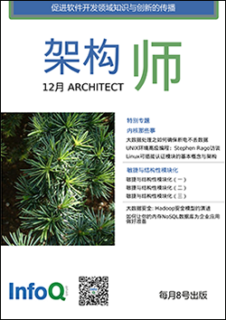

|  |
架构师 11 月刊每月8日出刊本期主编：侯伯薇 读者反馈：editors@cn.infoq.com |
本期主编：侯伯薇侯伯薇，生于丹东凤城，学在春城长春，工作在滨城大连；虽已年过而立，但自问童心未泯；对代码热情不减，愿与天下程序员共同修炼，不断提升。译有《学习WCF》、《Expert C# 2008 Business Objets》。 |
|
|
《架构师》月刊由InfoQ 中文站出品。 所有内容版权均属 C4Media Inc.所有，未经许可不得转载。 |